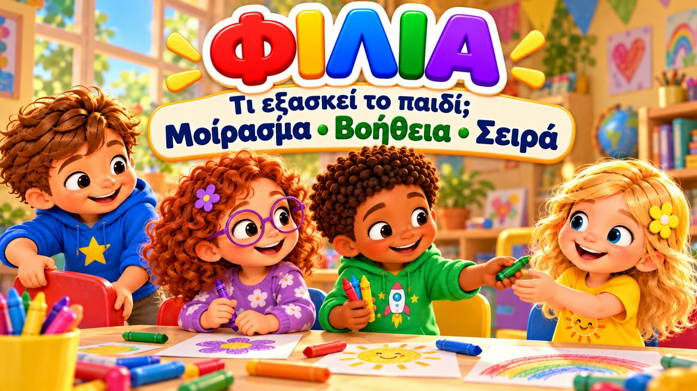
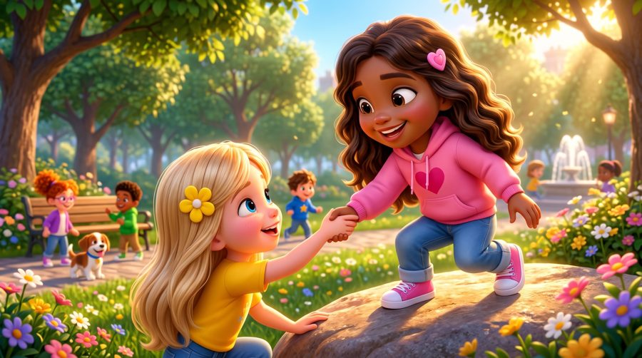
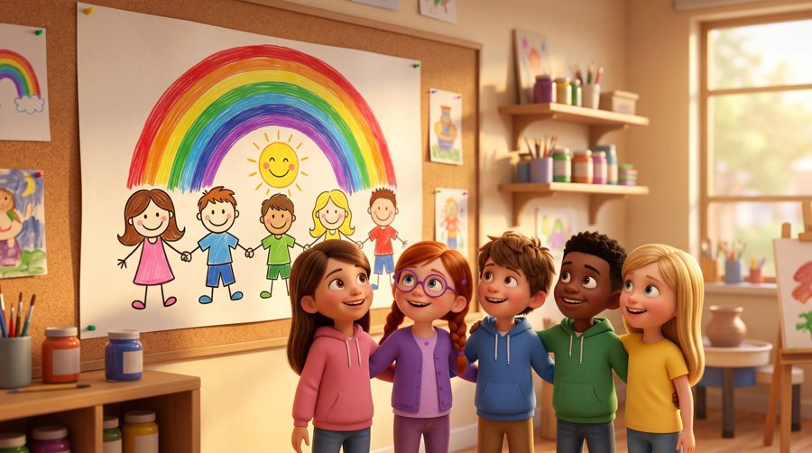
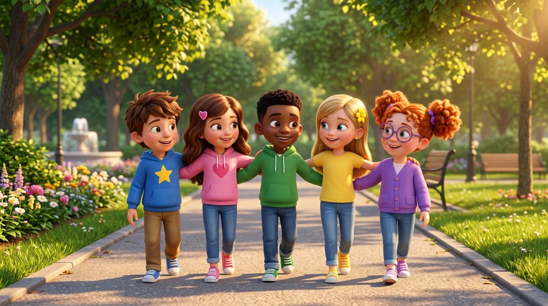

Γι' αυτό είναι οι φίλοι!
Ένα τραγούδι για τη φιλία! 💛 Τραγουδήστε με τον Μαξ, τη Μία, τον Τζέι, τη Λίλη, τη Ρόζα και τον σκυλάκο Μπάντι, που μαθαίνουν τι κάνουν οι καλοί φίλοι: μοιράζονται, βοηθούν, ακούν, χαίρονται ο ένας για τον άλλον — και παίζουν με τη σειρά!
Το «Γι' αυτό είναι οι φίλοι!» είναι ένα τραγούδι για παιδιά για τη φιλία: ο Μαξ κάνει χώρο για τη Ρόζα, ο Τζέι μοιράζεται τις μπογιές του με τη Λίλη, όλοι τρέχουν να βοηθήσουν όταν η Ρόζα σκοντάφτει, κι όταν ο Μαξ κι ο Τζέι θέλουν άλλο παιχνίδι ο καθένας, η Μία λέει «Ας παίξουμε πρώτα το ένα και μετά το άλλο!». Με στίχους-καραόκε, για παιδιά 3–8 ετών και τα Εργαστήρια Δεξιοτήτων.

▶💡 Γιατί είναι σημαντικό: Φιλία
Οι φιλίες κάνουν τα παιδιά να νιώθουν χαρούμενα, ασφαλή και αποδεκτά — και είναι εκεί όπου εξασκούν πρώτη φορά πολλές κοινωνικές δεξιότητες: μοίρασμα, σειρά, βοήθεια, συγγνώμη. Οι καλοί φίλοι δεν βρίσκονται, φτιάχνονται. Καλέστε φίλους για παιχνίδι, συζητήστε τι κάνει έναν καλό φίλο και προσέξτε πότε το παιδί σας φέρεται σαν καλός φίλος σε κάποιον.
👨👩👧 Τι μαθαίνει το παιδί
- Να μοιράζεται και να κάνει χώρο στους άλλους
- Να βοηθά έναν φίλο που πέφτει ή στενοχωριέται
- Να παίζει με τη σειρά αντί να μαλώνει
- Ότι οι φίλοι μπορούν να διαφωνούν και να μένουν φίλοι
- Να λέει «συγγνώμη» και να προσπαθεί ξανά
💬 Κουβέντα μετά το τραγούδι
- Τι κάνει κάποιον καλό φίλο;
- Τι κάνουμε όταν θέλουμε άλλο παιχνίδι από τον φίλο μας;
🏅 Κουίζ & Πτυχίο
Είδατε το τραγούδι μαζί; Τώρα διαβάστε στο παιδί κάθε ερώτηση — το παιδί δείχνει τη σωστή εικόνα. Αν απαντήσει και στις 6 ερωτήσεις, κερδίζει ένα πτυχίο για εκτύπωση!
🔒 Το όνομα χρησιμοποιείται μόνο για να φτιαχτεί το πτυχίο στη συσκευή σας. Δεν αποθηκεύουμε και δεν στέλνουμε τίποτα.
Τα κατάφερες! 🎉
Και οι 6 απαντήσεις είναι σωστές! Γράψτε το όνομα του παιδιού για να φτιαχτεί το πτυχίο.
🖨️ Δωρεάν εκτυπώσιμα
Δωρεάν για χρήση στο σπίτι και στην τάξη. Εκτυπώστε σε χαρτί Α4.
🖼️ Σκηνές από το τραγούδι





🎵 Κι άλλα τραγούδια


🎤 Στίχοι – Γι' αυτό είναι οι φίλοι!
Έλα, φίλε!
Έλα να παίξεις!
Δίπλα δίπλα
θα γελάσεις και θα τρέξεις!
Παίζουμε,
μοιραζόμαστε,
βοηθάμε και νοιαζόμαστε!
Γι' αυτό είναι οι φίλοι!
Η Μία έφερε ένα παιχνίδι,
κι όλοι θέλαμε να παίξουμε μαζί.
Ο Μαξ είπε στη Ρόζι:
«Έλα, κάθισε εδώ εσύ!»
Ο Τζέι είχε δυο μπογιές,
έδωσε μία στη Λίλι με χαρά.
Και ζωγράφισαν παρέα
μια ζωγραφιά με χρώματα πολλά!
Όταν δίνουμε και μοιραζόμαστε,
το παιχνίδι γίνεται πιο ωραίο.
Κι όταν είμαστε παρέα,
κάθε μέρα είναι κάτι νέο!
Ο φίλος ακούει,
ο φίλος νοιάζεται.
Κι όταν τον χρειάζεσαι,
κοντά σου βρίσκεται.
Δεν χρειάζεται να είμαστε ίδιοι,
για να είμαστε καλοί φίλοι!
Γι' αυτό είναι οι φίλοι!
Για παιχνίδι και χαρά!
Για να δίνουν ένα χέρι
όταν κάτι πάει στραβά!
Όταν χαίρεσαι,
χαίρομαι κι εγώ!
Κι όταν είσαι λυπημένος,
κάθομαι και σε ακούω!
Δίπλα δίπλα,
εγώ κι εσύ,
βοηθάμε ο ένας τον άλλο
κάθε στιγμή!
Γι' αυτό είναι,
γι' αυτό είναι,
γι' αυτό είναι οι φίλοι!
Η μπάλα του Μπάντι κύλησε μακριά,
κι η Ρόζι έτρεξε γρήγορα κοντά.
Μα σκόνταψε και κάθισε στη γη,
κι όλοι πήγαν δίπλα της στη στιγμή.
«Είσαι καλά;
Θέλεις ένα χέρι;»
Η Ρόζι χαμογέλασε
κι όλοι σηκώθηκαν μαζί.
Μετά ο Μαξ κι ο Τζέι
ήθελαν άλλο παιχνίδι ο καθένας.
«Ας παίξουμε πρώτα το ένα
και μετά το άλλο!» είπε η Μία.
Δεν χρειάζεται να μαλώνουμε
για να γίνει το δικό μας.
Μιλάμε, ακούμε
και βρίσκουμε έναν τρόπο!
Ο φίλος ακούει,
ο φίλος νοιάζεται.
Κι όταν τον χρειάζεσαι,
κοντά σου βρίσκεται.
Δεν χρειάζεται να είμαστε ίδιοι,
για να είμαστε καλοί φίλοι!
Γι' αυτό είναι οι φίλοι!
Για παιχνίδι και χαρά!
Για να δίνουν ένα χέρι
όταν κάτι πάει στραβά!
Όταν χαίρεσαι,
χαίρομαι κι εγώ!
Κι όταν είσαι λυπημένος,
κάθομαι και σε ακούω!
Δίπλα δίπλα,
εγώ κι εσύ,
βοηθάμε ο ένας τον άλλο
κάθε στιγμή!
Γι' αυτό είναι,
γι' αυτό είναι,
γι' αυτό είναι οι φίλοι!
Ένας φίλος θέλει βοήθεια;
ΒΟΗΘΑΩ!
Έχεις κάτι να μοιραστείς;
ΜΟΙΡΑΖΟΜΑΙ!
Ο φίλος σου μιλάει;
ΤΟΝ ΑΚΟΥΩ!
Κατάφερε κάτι σπουδαίο;
ΤΟΝ ΧΕΙΡΟΚΡΟΤΩ!
Διαφωνήσατε;
ΤΟ ΣΥΖΗΤΑΜΕ!
Κάποιος είναι μόνος;
ΕΛΑ ΜΑΖΙ ΜΑΣ!
Έχουμε διαφορετικές ιδέες;
ΔΕΝ ΠΕΙΡΑΖΕΙ!
Τι κάνουν οι φίλοι;
ΒΟΗΘΟΥΝ ΚΑΙ ΝΟΙΑΖΟΝΤΑΙ!
Οι φίλοι δεν χρειάζεται
να θέλουν πάντα τα ίδια.
Μια φορά παίζουμε
το παιχνίδι που θέλεις εσύ.
Μια φορά
αυτό που θέλω εγώ.
Μπορούμε να διαφωνήσουμε
και να είμαστε ακόμα φίλοι.
Μπορούμε να πούμε «συγγνώμη»
και να προσπαθήσουμε ξανά.
Γιατί ένας καλός φίλος
δεν χρειάζεται να είναι τέλειος.
Χρειάζεται να νοιάζεται.
Γι' αυτό είναι οι φίλοι!
Για παιχνίδι και χαρά!
Για να δίνουν ένα χέρι
όταν κάτι πάει στραβά!
Όταν χαίρεσαι,
χαίρομαι κι εγώ!
Κι όταν είσαι λυπημένος,
κάθομαι και σε ακούω!
Μιλάμε!
Ακούμε!
Μοιραζόμαστε!
Βοηθάμε!
Δίπλα δίπλα,
εγώ κι εσύ,
κάθε μέρα χτίζουμε
μια όμορφη φιλία μαζί!
Γι' αυτό είναι,
γι' αυτό είναι,
γι' αυτό είναι οι φίλοι!
Εσύ είσαι εσύ.
Κι εγώ είμαι εγώ.
Και μαζί...
μπορούμε να είμαστε φίλοι!
Γι' αυτό είναι οι φίλοι!